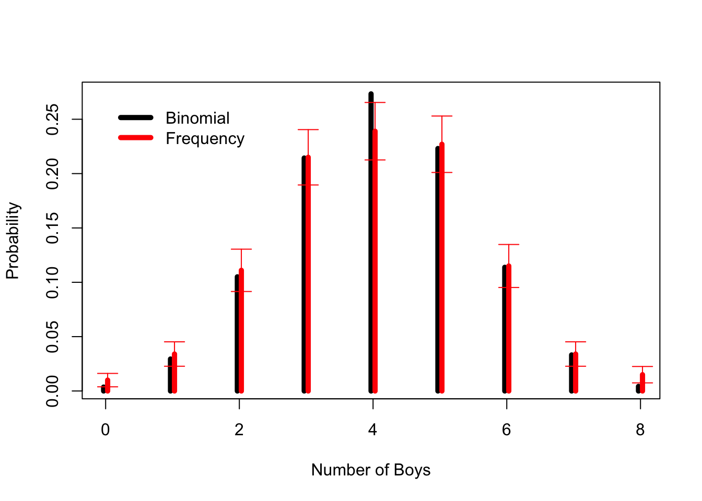

Quarto enables you to weave together content and executable code into a finished document. To learn more about Quarto see https://quarto.org.
Lecture 1 Code
Binomial Data Example
## Specify the sample space and observed frequenciesnum.boys <-0:8## Number of boys in 1,000 families of 8 childrenboys <-c(10,34,111,215,239,227,115,34,15)## Compute the unconditional probability of having a boyp.boy <-sum(boys*num.boys)/8000## Calculate null probabilities from the binomial distributionp <-dbinom(num.boys,size=8,prob=p.boy)## Here we simulate the p-value, reject the null at all conventional## levelschisq.test(boys,p=p,simulate.p.value=TRUE)
Chi-squared test for given probabilities with simulated p-value (based
on 2000 replicates)
data: boys
X-squared = 44.238, df = NA, p-value = 0.0004998
## Let's plot the binomial and the sample proportion estimates for the number of## boys in families with eight childrenx <-0:8## Observed valueso <-c(10,34,111,215,239,227,115,34,15)p.n <- o/1000.# Sample proportions for each observed vector position## Lindeberg-Levy CLT pointwise asymptotic error barssd.p.n <-sqrt(p.n*(1-p.n)/1000)p.boy <-sum(x*o)/8000plot(x-.03,dbinom(x,8,p.boy),main="",xlab="Number of Boys",ylab="Probability",type="h",lwd=5,lty=1)points(x+.03,p.n,col="red",type="h",lwd=5,lty=1)# Asymptotic pointwise 95% coverage CIsarrows(x+.03, p.n+1.96*sd.p.n,x+.03, p.n-1.96*sd.p.n, angle=90, code=3, length=0.1, col="red")legend(0,0.27,c("Binomial", "Frequency"),lwd=c(5,5),col=c("black","red"),bty="n")

## We take the boy-girl ratio data, compute the sample proportion probability## estimates of Pr(X=0,1,...,8) and binomial probability function counterpart## estimates, then we use a percentile bootstrap to compute pointwise and## simultaneous confidence intervals. The asymptotic confidence intervals are## also computed and can be compared with the pointwise bootstrap intervals (they## should be indistinguishable), while the simultaneous intervals will be wider.## The results are displayed in plots and a table. You need to install the MCPAN## package first.require(MCPAN)
Loading required package: MCPAN
Warning in .recacheSubclasses(def@className, def, env): undefined subclass
"numericVector" of class "Mnumeric"; definition not updated
require(np)
Loading required package: np
Nonparametric Kernel Methods for Mixed Datatypes (version 0.60-11)
[vignette("np_faq",package="np") provides answers to frequently asked questions]
[vignette("np",package="np") an overview]
[vignette("entropy_np",package="np") an overview of entropy-based methods]
set.seed(42)n <-1000o <-c(10,34,111,215,239,227,115,34,15)x <-0:8## Compute the unconditional probability of a boy and the sample proportions for## x=0,1,...,8 boys, p.n(x). Note p.n will be a vector of length c=9.p.boy <-sum(x*o/8000)p.n <- o/n## Note there are two ways to compute sample proportions, one using the table()## and prop.table() functions and the other using the np package function## npudens() with an appropriate kernel function and smoothing parameter of 0## (both generate identical output)# X <- factor(sample(x,n,replace=TRUE,prob=p.n),levels=x)# prop.table(table(X))# library(np)# fitted(npudens(tdat=X,edat=factor(x),bws=0))## Compute the asymptotic standard error for computing confidence intervals## (vector of length c=9). Asymptotic pointwise confidence intervals can be## computed as p.n - 1.96*sd.p.n and p.n + 1.96*sd.p.n, for example.sd.p.n <-sqrt(p.n*(1-p.n)/n)## Suppose you presumed a binomial distribution for the data and computed the## implied probability estimates for x=0,1,...,8p.b <-dbinom(x=x,size=8,p.boy)## Now we use numerical methods to obtain confidence intervals for the sample## proportions. Simulate B draws from the empirical estimate p.n and store them## in a bootstrap matrix of dimension B x 9, where each row is a bootstrap and## each column corresponds to x=0,1,...,8.B <-10000boot.mat <-t(sapply(1:B,function(i) fitted(npudens(tdat=factor(sample(x,n,replace=TRUE,prob=p.n),levels=x),edat=factor(x),bws=0))))## Compute the pointwise and simultaneous confidence intervals for the sample## proportion using a percentile bootstrap and the SCSrank function from the## MCPAN package (you must install this first). Each column of ci.pw and ci.sim## (there are two) contain the lower and upper bounds of the confidence## intervals associated with the sample proportions for x=0,1,...,8.alpha <-0.05ci.pw <-t(apply(boot.mat, 2, quantile, probs =c(alpha/2,1-alpha/2)))ci.sim <- MCPAN::SCSrank(boot.mat, conf.level=1-alpha)$conf.int## Create plots of the sample proportions p.n, the binomial probabilities p.b,## and the asymptotic (pointwise) and bootstrap (simultaneous) confidence## intervalspar(mfrow=c(1,2),cex=.8)plot(x-.03,dbinom(x,8,p.boy),main="Pointwise Confidence Intervals",xlab="Number of Boys",ylab="Pr(X=x)",type="h",lwd=2,lty=1)points(x+.03,p.n,col="red",type="h",lwd=2,lty=1)# Asymptotic pointwise 95% coverage CIsarrows(x+.03, p.n+qnorm(1-alpha/2)*sd.p.n,x+.03, p.n+qnorm(alpha/2)*sd.p.n, angle=90, code=3, length=0.1, col="red")legend("topright",c("Binomial", "Frequency"),lwd=c(2,2),col=c("black","red"),bty="n")plot(x-.03,dbinom(x,8,p.boy),main="Simultaneous Confidence Intervals",xlab="Number of Boys",ylab="Pr(X=x)",type="h",lwd=2,lty=1)points(x+.03,p.n,col="red",type="h",lwd=2,lty=1)# Bootstrap simultaneous 95% coverage CIsarrows(x+.03, ci.sim[,1],x+.03, ci.sim[,2], angle=90, code=3, length=0.1, col="red")legend("topright",c("Binomial", "Frequency"),lwd=c(2,2),col=c("black","red"),bty="n")